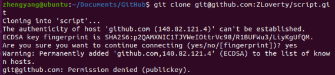
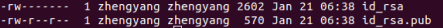
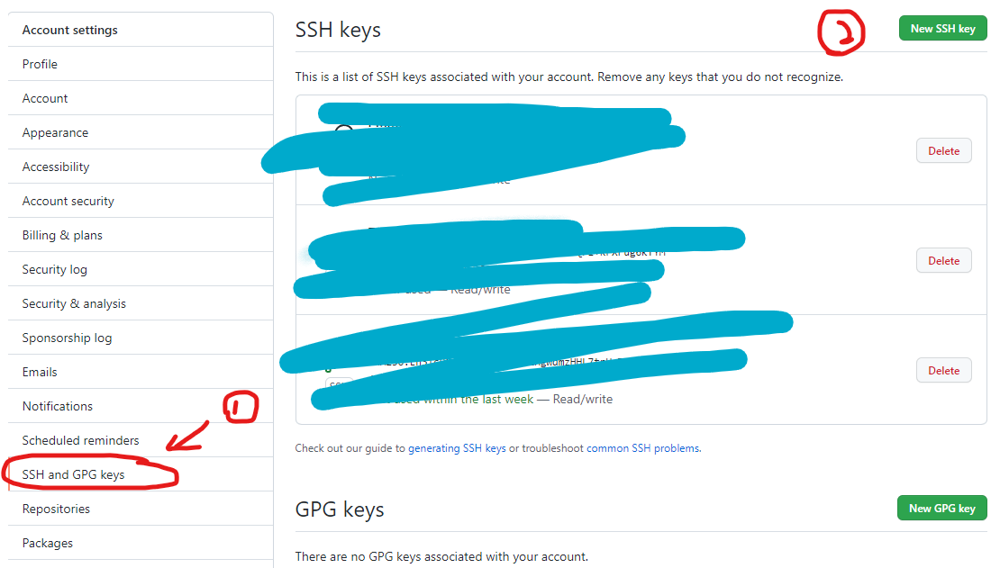
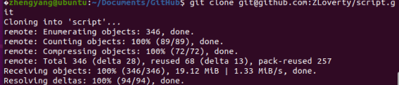

Notepad++
- Set up “runPython” in Notepad++ after installing anaconda:
- Run -> Run (F5)
- S:\Anaconda\3\condabin\activate.bat base & S:\Anaconda\3\python.exe -i "$(FULL_CURRENT_PATH)"
- Save as “runPython”, pick an easy-to-use shortcut
- Now python can be run in Notepad++ with the shortcut created in step c.
- The run scripts of Notepad++ are saved in
C:\Users\[username]\AppData\Roaming\Notepad++\shortcuts.xml
Python
- Show all available font families in Python:
import matplotlib.font_manager from IPython.core.display import HTML def make_html(fontname): return "<p>{font}: <span style='font-family:{font}; font-size: 24px;'>{font}</p>".format(font=fontname) code = "\n".join([make_html(font) for font in sorted(set([f.name for f in matplotlib.font_manager.fontManager.ttflist]))]) HTML("<div style='column-count: 2;'>{}</div>".format(code))
- Get immediate subfolders (next function):
import os folder = '~' sfL = next(os.walk(folder))[1]
- Bitmap image can be converted to SMOOTH vector image easily using Python. The original image shown below can be smoothed by the following command:
import matplotlib.pyplot as plt plt.imshow(data, interpolation='spline16')
Then we need to save the smoothed image (vector) in a vector image format (.pdf, .eps, .svg), using the following command:
plt.savefig(r'I:\Github\Python\ForFun\Peng\OP\OP_pdf.pdf', format='pdf')
This is the image where I compare original, pdf and svg savefig outcome: compare
- Matplotlib colormap: mpl has a convenient way of creating discrete colormap for curves. more info
from matplotlib import cm viridis = cm.get_cmap('viridis', 8)
Then the colors in the colormap viridis can be accessed by viridis(x), where x takes value between 0 and 1. For example, viridis(0.5) is (0.122312, 0.633153, 0.530398, 1.0) in RGBA. All colors can bee seen by calling viridis:

There is no need to import cm again, since it's already included in matplotlib.pyplot, which I almost import every time. An example:
set3 = plt.cm.get_cmap("Set3")
The "Set3" colormap is created where colors can be accessed by set3().
- Convert date object to formatted string: (reference)
Timestamp('2022-01-17 00:00:00') -> '01172022'
use
date.strftime("%m%d%Y")
Atom configs
1. Keymap.cson
".platform-win32 atom-text-editor:not([mini])":
"shift-ctrl-K": "markdown-writer:insert-link"
"shift-ctrl-I": "markdown-writer:insert-image"
"shift-ctrl-X": "markdown-writer:toggle-taskdone"
"ctrl-i": "markdown-writer:toggle-italic-text"
"ctrl-b": "markdown-writer:toggle-bold-text"
"ctrl-'": "markdown-writer:toggle-code-text"
"ctrl-h": "markdown-writer:toggle-strikethrough-text"
"ctrl-1": "markdown-writer:toggle-h1"
"ctrl-2": "markdown-writer:toggle-h2"
"ctrl-3": "markdown-writer:toggle-h3"
"ctrl-4": "markdown-writer:toggle-h4"
"ctrl-5": "markdown-writer:toggle-h5"
"atom-text-editor":
"alt-o": "document-outline:toggle"
2. Markdown-preview-enhanced customized style
.markdown-preview.markdown-preview { @page{ size: A4; } @titlecolor:#707fbaff; @bodycolor: #111111; color: @bodycolor; font-family: helvetica; h1,h2,h3,h4,h5 { font-family: Arial '[-]'; color: @titlecolor; font-weight: light; } }
Linux
- Disk activity monitor:
sudo iotop
Git (GitHub)
- To reset
.git: sometimes you want to ignore certain files, which are already tracked in the repository. At times like this, you need to reset the.git, which contains the tracking information. First, untrack everything by typing (this removes any changed files from the index(staging area))
git rm -r --cached .
then run
git add .
This adds everything back, but according to the updated .gitignore. Commit this change and it's done.
- Command line authentication: starting from summer 2021, GitHub no longer allow username and password authentication from command line interface. Token authentication becomes required for git operations (original blog). With this requirement implemented, when I try to clone my repositories using
git cloneon a new, unauthenticated computer, access is denied.

It's possible to get around this problem with a GUI. In my memory, it was just a set of well-guided steps, involving some clicks in a web browser, and that's it. However, when a GUI is not available, setting up the authentication is not so straightforward.
One way to do it when only command line interface is available, is to generate a pair of SSH keys using ssh-keygen. This will generate a pair of key files with encrypted strings.

Paste the content of the pub-key (id_rsa.pub) to the "SSH and GPG keys" tab in GitHub account settings page.

Click on "New SSH key" and paste the pub key in the blank. Now, try to clone the repo again with git clone ssh@url.copied.from.github.

SSH
sshworks when the device you are connecting to is in the same private network.- VPN tools, such as OpenVPN, can create a virtual private network, allowing connection from outside a private network.
- By default, closing a ssh session kills any user programs. To keep programs running after closing a session, we can install a software
screenon the Linux system. - Virtual machines can be used to test server behavior.
ffmpeg
- Quick start
ffmpeg -y -framerate 50 -i %05d.jpg -vcodec h264 output.avi
-y means automatically replace existing file without asking. -i specifies input images. Note that input images can be an image sequence with C style formatted strings as names. -vcodec provides a lot of options of different encoders, among which h264 is usually a safe choice. Not many encoders does black and white encodings. The last argument is always the output file name.
ffmpegimage sequence formatted input only supports consecutive names, e.g. image0, image1, image2, ... Inconsecutive names such as image0, image2, image4 cannot be converted by default settings. On Linux build, there is an optional setting called "Globbing" that can be switched on by passing-pattern_type glob. However, such option is not included on Windowsffmpeg. Source
Cloud Storage
- Globus file transfer supports command line interface (CLI). Batch transfer with custom filtering can be achieved.